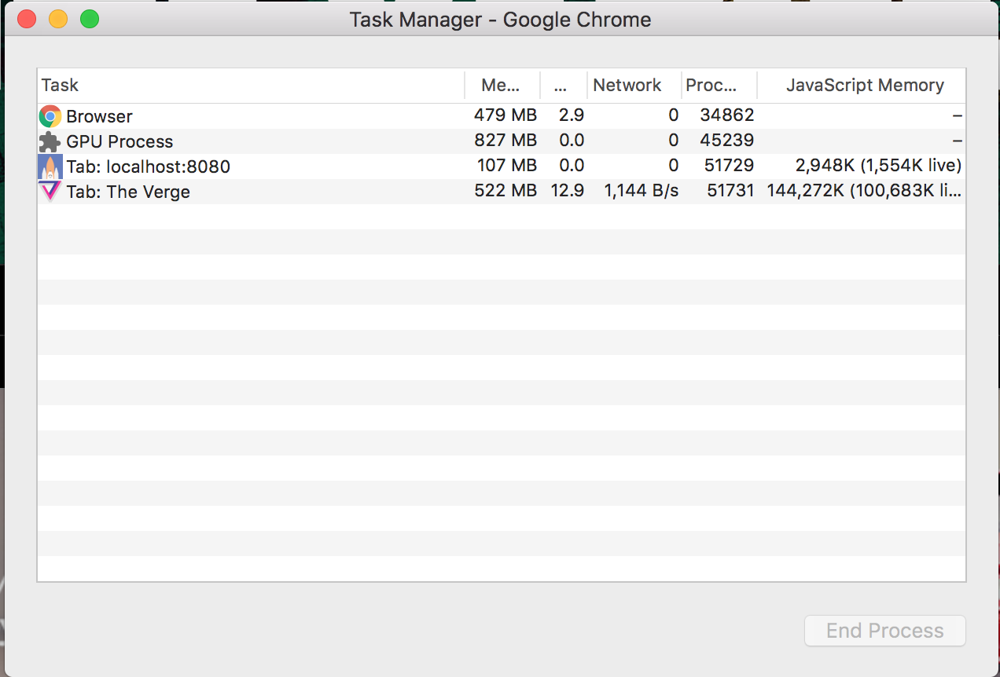
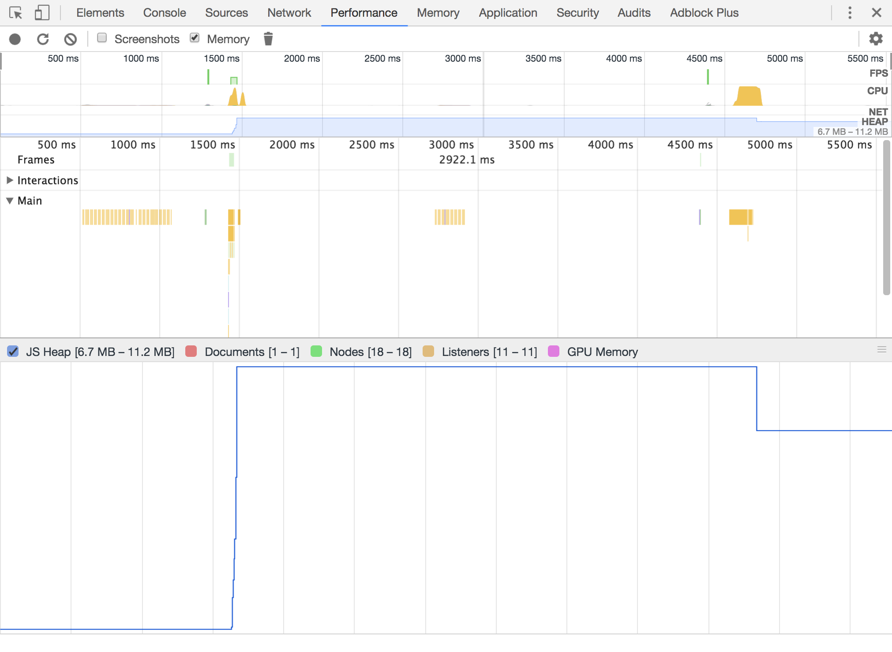
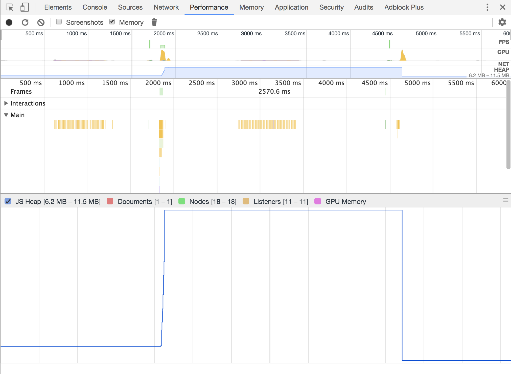

Memory is fundamentally important to any computer program. It is an in-demand, finite resource. As devices are given more memory, our apps discover new ways of gobbling it up.
Ten years ago, we saw the beginning of a big change in the way people use the websites we make. Devices like the iPhone and Galaxy mobile phones are now the preferred way of accessing the web. Devices like these are given a fraction of the amount of memory of desktop and laptop computers. And that's just the high-tech tip of the iceberg - the majority in use around the world have even less.
We're often told that memory is important, that you need to be mindful of the limitations of these machines. This is absolutely true. But JavaScript does such a remarkable job that, for the most part, we don't need to worry about memory. Why is that?
Before we can answer that, we need to learn about what memory is and why it is needed.
Memory is used to store instructions and data for computer programs. Early computers like the ENIAC and Colossus were programmed by rewiring their hardware, and consumed data for processing from punched tape. They were fast at breaking encrypted messages, but it would take weeks to re-program them to perform a different task.
Memory was introduced later to make re-programming computers more convenient. These "stored program computers" could also re-program themselves depending on the data stored in memory.
The memory used by modern-day computers, Random Access Memory, is lightning fast and can read and write data at an imperceptable speed.
Web browsers and JavaScript manage memory on our behalf. The areas of memory it manages are called heaps.
JavaScript assigns memory for us whenever we declare variables, a fancy name for "a stored value that can change". Declaration reserves space in memory for our variables. There are four ways of declaring variables:
var functionScopedVariable
let blockScopedVariable
const blockScopedConstant
globalVariable = '...'
JavaScript reserves areas of memory for declaring variables globally and inside scopes. If the heap is a farm, scopes are fields.
if () {
}
class {
}
while () {
}
for () {
}
switch () {
}
function() {
}
Scopes capture the variables outside of functions and blocks and make them available for use inside. Inside of a scope, you can re-declare variable names and protect variables from being written to by other functions. Memory used by variables is freed again when their parent scope ends.
var, let and const tell JavaScript to bind variables to the closest scope. Each one declares variables in different ways, so it's a great idea to read more about about how they work. Using these keywords inside of scopes means they can be safely discarded by JavaScript when the function ends. This is good because memory can be freed for variables we no longer need.
The fourth way of declaring a variable has important consequences for our code. When you assign a value to an un-declared variable, a new global variable is created. This is an easy mistake to make, and a common source of bugs. The global scope exists for the lifetime that our website is open in a browser, and as such these variables can never be automatically discarded by JavaScript.
JavaScript is our friend when it comes to the chore of allocating and freeing memory, but unless we are very careful, it will behave in ways we don't expect.
Once variables are declared, they can be assigned a value. You and I commonly call "=" the "equals sign", but its proper name in JavaScript is the "assignment operator".
In fact, all of these operators assign memory. They tell javascript to take a value from the code on the right, and assign it to a memory address described by the variable name on the left.
Webassembly is a new feature for allowing browsers to run languages other than JavaScript in your web pages. It makes it possible to run high-performance code written in languages like C, C++, or Rust in a browser, like this example from Mozilla of the Unreal engine animating a complex 3d scene in real-time.
Webassembly programs have complete ownership over the memory that they use, and can make their own decisions about how to allocate and free memory. This will give developers the same fine-control of memory, and the performance that comes with it, as native applications.
For more information about webassembly, Lin Clark's excellent talk from JSConf covers the topic in much more detail!
So far we've learned about how memory is allocated. Let's talk about how memory is freed.
Memory is a finite resource inside the computer. It's not created or destroyed. JavaScript can only make sure that it is only using as much memory as it needs and free up memory it doesn't need for re-use.
This is the job of the Garbage Collector.
Before we take a look at that, let's take a quick look at how memory is managed in a language called C.
C is a language that is used to make many software tools. It is a powerful language that gives you a lot of authority over resources like memory.
int *array = malloc(10 * sizeof(int));
The malloc function is used to dynamically allocate memory. In JavaScript we can change the size of objects and arrays at will, but to do this in C we need to use memory management functions. This line of code declares an array with ten items. Interestingly, malloc doesn't initialise memory. If you tried to read items from this array now, you will get random data from memory. You might even find data left behind from other applications! Memory is freed using the free function.
free(array);
This is a lot of control, but it is also a lot of work to manually allocate and free memory.
Garbage Collection is designed to do take care of memory management for you. And it does an excellent job!
The garbage collector is not one single process. Memory is divided up into two areas: the young generation and the old generation.
Variables in JavaScript are mostly short-lived, used for a split-second for a single purpose and then discarded again. The young generation is specially designed to make this as fast as possible so your code is not held up. All new variables are allocated memory here, and organised into 1 megabyte pages.
The young generation is partitioned into two semi-spaces. When a semi-space becomes full, a "minor" garbage collection begins. Variables are determined to be "living" or "dead" in a process called a scavenge. "Dead" variables are "unreachable", they were declared inside a function that has run its course and can no-longer be traced to living data. These variables are discarded. The whole process takes less than 1ms, and the more dead data is discarded the more efficient the minor GC is.
"Living" variables that are still being used are moved to the second semi-space. Any living variables that are still being used after they've already been moved once are moved to the "old generation".
The old generation is designed for longer-lived data. Unlike the young generation, which is a small, agile part of memory, the old generation can expand to a very large size. When the size of the whole heap grows large enough, a major garbage collection begins.
The major GC undertakes a root-and-tip survey of the whole heap to find dead data. This process is called "marking", and its job is to find data that is not needed and mark it to be reclaimed. The more data that is in the older generation, the longer marking takes. This is significant because your application must be paused while the survery is undertaken. Marking the heap can take up to 100ms, or six frames of animation, for very large applications. V8, Chrome's implementation of JavaScript, breaks this process up into smaller 6ms chunks so that most applications keep running without any noticable pauses. The latency of the garbage collector is one of the major reasons why JavaScript struggles with high-performance applications such as videogames, and why webassembly is so exciting for the future.
The heap is then "swept", which makes memory usable again. Sweepers run on dedicated CPU threads, but when there is too much data in the heap the main thread mucks in and helps. This is a serious performance consideration for your application: if the main thread has to spend time sweeping memory, that is time that your application cannot respond to user interraction. Any time that the main thread uses to sweep memory is time it cannot spend running your application, you won't be able to click buttons or even scroll the page. Using only the memory you need is important for giving your users a jank-free experience.
Finally, when memory has been freed it can be compacted. Empty space left in pages of memory can be compacted, allowing memory to be freed up and re-used.
The garbage collector then is a program that uses an "educated guess" to remove unused data and free up memory. Problems with memory occur when we fill up memory with long-lived, "live" data that can't be reclaimed. The two major problems that cause this are memory bloat and memory leaks.
Memory bloat is making websites using excessive amounts of assets. HTML, CSS and your JavaScript code are also stored in memory, and Chrome has its own heap of memory to manage these in. It's important to remember that both heaps contribute to a page's memory footprint, and a page can experience problems without a single line of JavaScript being written.

Opening the Chrome task manager shows us how much memory each tab is consuming in total. It also breaks down the memory used by just the JavaScript heap to help you diagnose whether your issue is related to your JavaScript code, or whether your page is bloated by your HTML and CSS.
The baseline memory consumption for a "Hello World" page with no JavaScript, no CSS and no images is around 160 megabytes. A crowded page consuming 500 megabytes may not cause an issue on a modern laptop with 16 gigabytes of memory, but it is significant for even a modern smartphone with 2 gigabytes of memory. It becomes critical on older and inexpensive devices that might have only 1 gigabyte of memory or less.
When your application steadily accumulates more data in memory than you expect, you have a memory leak. The majority of data created by applications are short-lived and are quickly discarded. Memory leaks are one of the most common problems and are caused by mistakes in code that tricks the garbage collector into thinking that unused data needs to be retained.
Variables created in the global scope are by definition long-lived. This is because the global scope lasts as long as the website is open in the browser. Global variables live forever unless they are manually unset.
function repeat() {
results = []
for (var index = 0; index < 100000; index++) {
results.push({index})
}
}
This function illustrates how easily global variables can be accidentally created. Because the "results" variable is declared without a "var" keyword, the data is created in the global scope and lives forever. Let's look at what this function does to memory consumption.

function repeat() {
var results = []
for (var index = 0; index < 100000; index++) {
results.push({index})
}
}
By fixing the global assignment, the garbage collector can free up all the memory assigned in this function after it is called.

There are other scopes that create long-lived data. Timers and intervals have access to variables in their scope, and because they are needed as long as the timers are active, their scopes stay alive.
function startTimer() {
var results = []
return setInterval(() => {
console.log('Tick')
results.push(makeLargeString())
}, 1000)
}
It's interesting that the line doesn't only go up! This is the effect of the major GC compacting memory to make more effective use of it. The overall trend is upwards, the classic mark of a memory leak. The way to fix this is to always remember to clear your timeouts and intervals using clearTimeout() and clearInterval().
Event listeners also capture variables in their scope and can keep them alive just like timers.
function createButton() {
var strings = []
var button = document.createElement('input')
button.value = "Create large string"
button.type = "button"
button.onclick = () => {
strings.push(makeLargeString())
}
document.body.appendChild(button)
}
As long as the event listener is active, its scope is kept alive. Removing unneeded event listeners using removeEventListener() frees up the memory they use.
A common source of memory leaks are orphaned DOM nodes. We use DOM nodes for creating and manipulating HTML elements.
var buttons = new Array(100000)
.fill('')
.map(() => document.createElement('input'))
.map(button => Object.assign(button, {value: 'Click me'}))
.map(button => Object.assign(button, {type: 'button'}))
This script creates detached DOM nodes, which are useless if they are not added to the DOM tree. Chrome DevTools can help us find these orphaned nodes by taking a memory heap snapshot.
By taking a memory snapshot, and filtering for "Detached" nodes, we can find all the nodes currently in memory that are not in the DOM tree. By clicking on these, we can look for clues to where they can be found. This snapshot lists the object containing our DOM nodes.